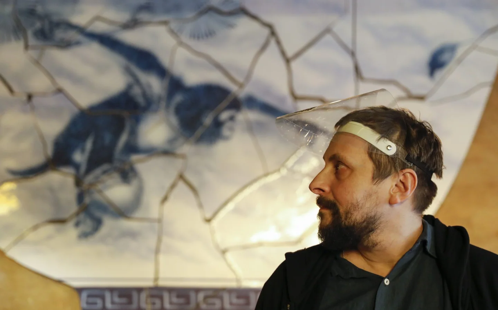

Дом чая и мороженого
В «Чайной высоте» пробуют один сорт в разных завариваниях, сравнивают урожаи и превращают чайные вкусы в мороженое.
Команда чайной
Основатель и чайный шеф Виктор Енин ведёт дегустации, работает с коллекцией чая и разрабатывает рецепты Кунгфу Айскрим. Первую партию чайного мороженого в клубе приготовили весной 2006 года.
В работе с российским чаем участвует Аля Тер-Ованесян. На встрече о чае Чёрного моря она представила образцы из Сочи и рассказала о сборе и обработке.
Разговор с Виктором Ениным